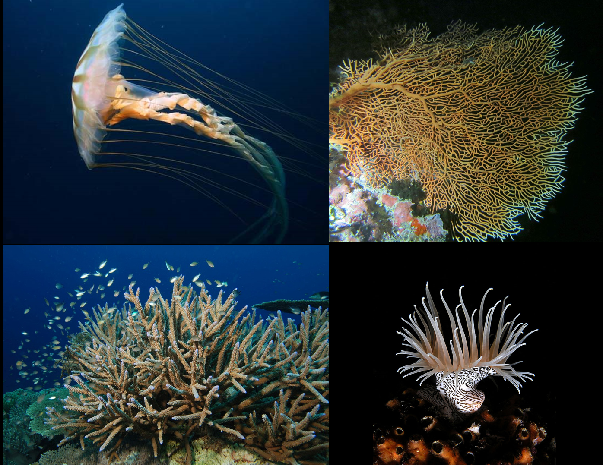
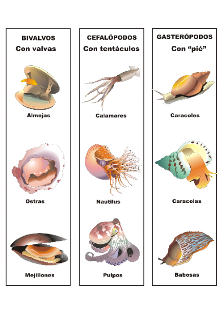
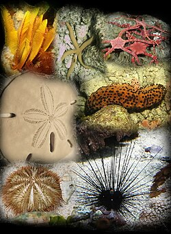

Animales invertebrados
Los animales invertebrados son aquellos que no poseen columna vertebral ni un esqueleto interno. Representan la mayor cantidad de especies animales en el planeta y pueden encontrarse en el agua, la tierra y el aire. Muchos tienen el cuerpo blando, mientras que otros poseen caparazones o estructuras externas que los protegen.

Tipos de Animales Invertebrados y sus Características
Poríferos
Los poríferos, también conocidos como esponjas marinas, son animales acuáticos muy simples que viven adheridos a rocas u otras superficies. Se alimentan filtrando partículas del agua.
.jpeg)
Cnidarios (Celentéreos)
Son animales acuáticos que poseen tentáculos y células urticantes para defenderse o capturar alimento. Ejemplos: Medusas, corales y anémonas.

Gusanos
Los gusanos son animales de cuerpo alargado y blando. Algunos viven en la tierra y otros en el agua o dentro de otros seres vivos de forma parásita.
.jpeg)
Moluscos
Los moluscos son animales de cuerpo blando; muchos tienen concha para protegerse. Se desplazan lentamente y muchos tienen tentáculos.

Artrópodos
Son el grupo más grande de animales invertebrados. Poseen patas articuladas y un exoesqueleto duro que protege su cuerpo (Insectos, arácnidos, crustáceos).
.jpeg)
Equinodermos
Son animales marinos que poseen una piel espinosa y una simetría especial. Se desplazan lentamente y habitan únicamente en el mar.
